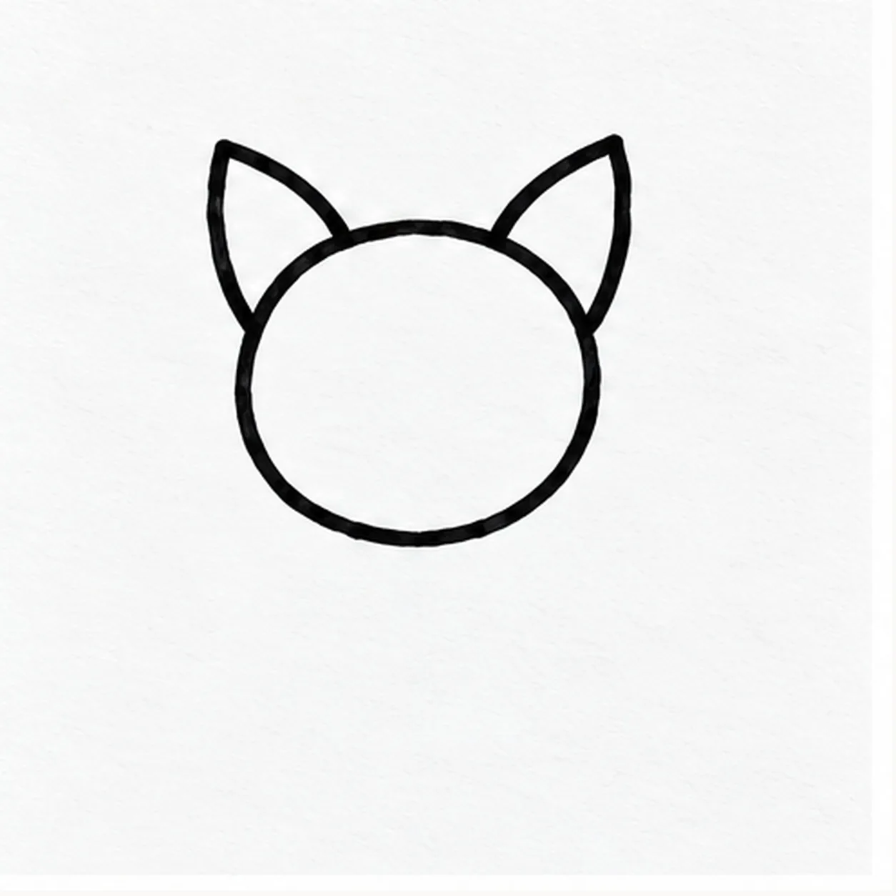
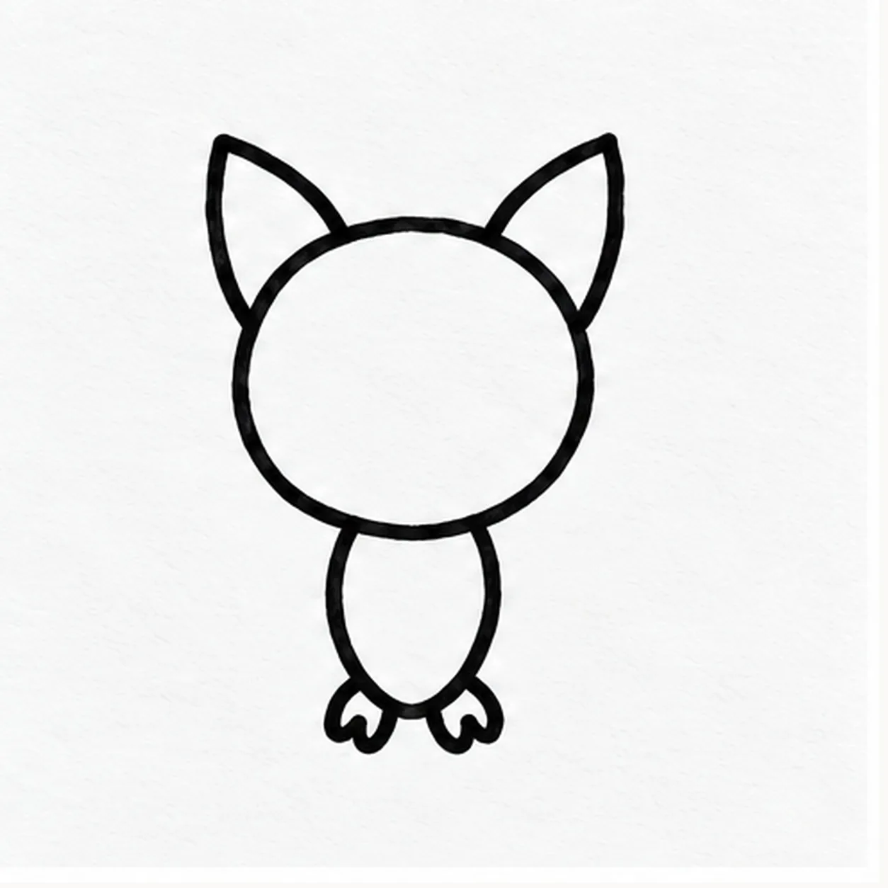
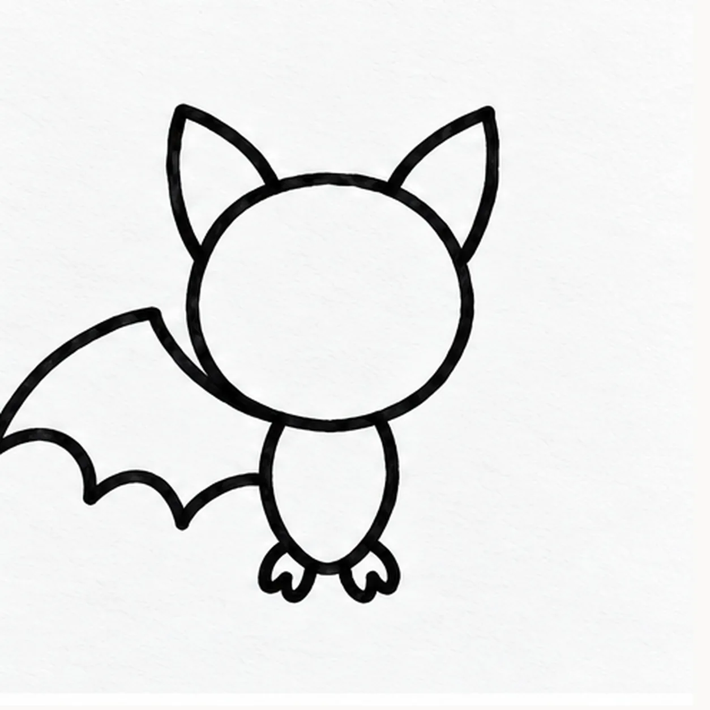
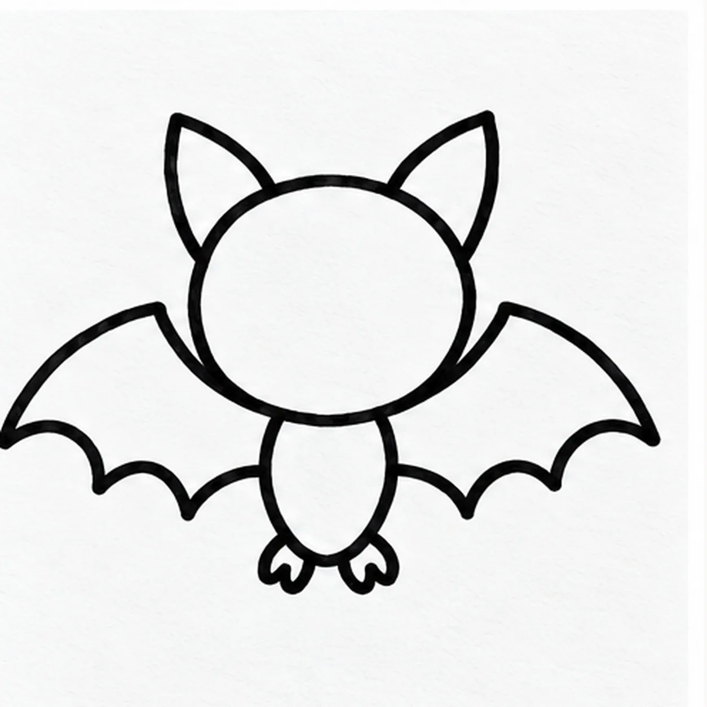
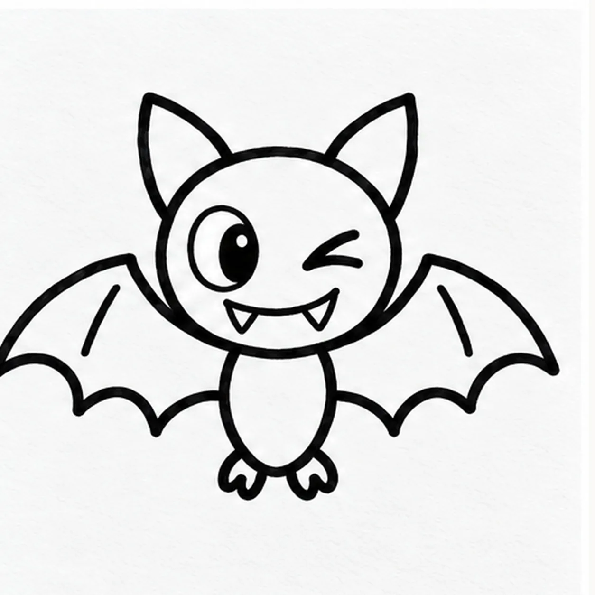

Felt-tip marker mode
Let's draw a cartoon bat
Treat this as one playful practice round: sketch the idea loosely, simplify the shapes, then commit with confident marker outlines and bright fills.
-
01

Draw the head and ears
Draw a broad circle above page center. Attach one pointed ear at each upper side, leaving the lower sides of the head clear for wings.
Marker tip: Keep the head high enough for the little body; leave wide blank space on both sides for the wings.
-
02

Hang the small body
From the bottom of the head, taper a short body downward. At its base, attach two tiny claw feet that point outward, one to each side.
Marker tip: Let the body narrow toward two feet and keep the head empty until the face step.
-
03

Spread the left wing
From the left shoulder, sweep a long upper edge outward to a high wing tip. Curve the lower edge back in exactly three shallow scallops, meeting the same shoulder without covering the head.
Marker tip: Count three clear dips along the left lower edge before meeting the shoulder.
-
04

Spread the right wing
Repeat the wide upper sweep from the right shoulder to a right wing tip. Bring the lower edge home in three shallow scallops, keeping the head and left wing fixed.
Marker tip: Match the left wing span, and count three right-side dips without moving the central bat.
-
05

Give the bat a cheeky face
Set one wide oval eye on the left of the face and a short angled wink on the right. Curve a grin beneath them with two tiny fangs, then pull one short rib line inside each wing toward its tip.
Marker tip: Give the left eye room for a pupil and keep the wink angled; place exactly two little fangs under the grin.
-
06
Color the flying bat
Fill the existing head and body deep violet, both wings indigo, and the ear centers coral. Keep the wide eye and two tiny fangs white; thicken only the same black outlines and rib lines.
Marker tip: Let the black ink dry first, then use short overlapping marker passes so paper streaks remain visible.